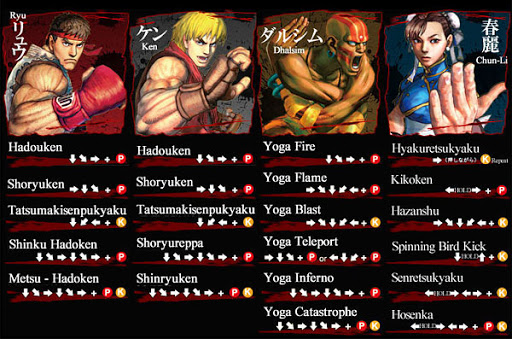
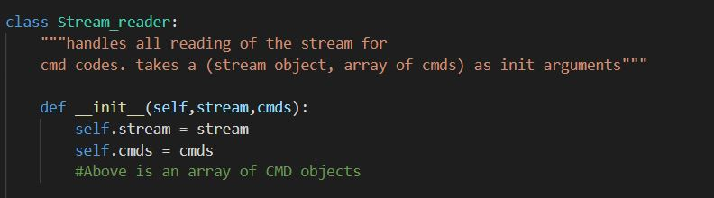
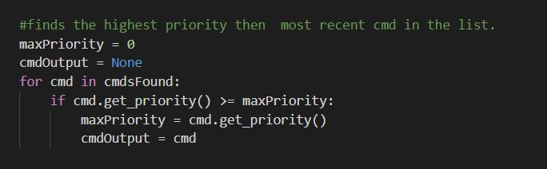
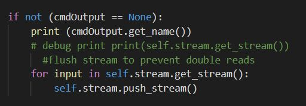

Development
Maya Python Programs
The following program I developed generates a Poly shape chain of links in Maya 2020.
you can choose the number of links, the length of the links and the thickness of the links.
The slider mins and maxes dynamically change to prevent the links from clipping. The links
are parented to the first link and renamed. A video demonstration can be seen below.
This program uses a window class which first creates the UI.
This window also has an associated Chain class object.
The chain object has associated ring class objects stored in an array. The
first (root chain) remains at index 0 at all times.
The links are created from a torus shape that has modified subdivisions and edges.
Every link is moved based on it's position in the chain and its 2 radi.
Each link is also renamed and parented to the root ring.
Whenever the slider is changed, the old chain is deleted and a new chain is created. This is quicky excecuted by deleting the root link and instancing a new Chain class. While the overhead
may be larger using this strategy VS moving and resizing each link, the implementation is much simpler and more clear. This allows for easier changes, troubleshooting, and teaching. I also reasoned that this program would not be used
during a runtime of a game, so it's overhead would have less precedence over clarity.
Changing one of the radius or link radius effects the other's maxes/mins.
This is to prevent the links form colliding and clipping through each other.
The cancel button deletes the current root link, removing the chain of poly objects.
Confirming simply closes the UI window, leaving the chain to be used.
For the full code visit the project repository.
FIGHTING GAME INPUT SYSTEM
I wanted to solve a problem: How do 2d fighters (like street fighter) interpert
commands like down-left-right-punch and turn them into fireballs?
Background information on fighting game commands

I began by planning what the system would need. other than the basic task of
correctly reading the input, it would also have to use a set time frame, include
leniency for wrong inputs and prevent input conflicts.

Next, I came up with the general idea for how to store the inputs. My solution:
a cyclical array.

I continued planning by figuring out how to solve each of the aformentioned
additional requirements.

Finally, I rounded out the planning stage with a general class outline. I used Python 3 for the implementation.

Note: the implementation uses numpad fighting game notation, more info
here.
The implemented code stores any special move as a class-

and the stream as it's own class.

It holds all the inputs in an array, and has a distinct beginning(the oldest
input) and end (the most recent input)
index. When an input is added, it is placed at the index of the beginning, replacing
the previous value. The end and beg indeces are then shifted one to the right, which
shifts the new input to the end index and the oldest input to the beg index.
The beg and end indeces will also wrap back around to the left once they reach the end of the array.

The stream will also replace the oldest input with an empty
input every few milliseconds. This creates the timing window for
the command to be excecuted by the player.


The stream and all special moves are held in a stream reader class.

It looks for inputs when triggered by checking each input in the stream against
the specific codes stored in each CMD (special move) class. If an input matches
the current targeted character in the code, the targeted code is shifted over or "checked".
Once the whole code has been checked for a CMD, it is added to a list of
found CMDS. This way of "checklisting" the required codes allows the player to
input a slightly off code (such as down-up-right-left-punch where down-right-punch
is the code) and still get the desired special move.

The reader then checks for the priority of each code before outputing
the highest priority and most recent special move. This prevents the reader from outputting two
special moves on the same read.

The Stream is then flushed to prevent the reader from reading the same stream information twice
(which can result in unwanted specials being read)

The resulting program works as follows:
For more information and the full code, visit the github repo.
HTML and CSS Website
This current website was built by me in HTML and CSS. A link to the Project Repository
can be found here.
test